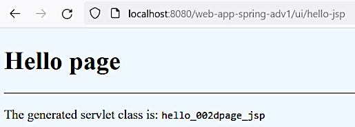

Get rid of XML configuration
Get rid of XML configuration
Get rid of XML configuration
Mar 22, 2023
The complete instructions may be found here. The following is the particular customized command:
>mvn archetype:generate -DarchetypeGroupId=org.apache.maven.archetypes -DarchetypeArtifactId=maven-archetype-webapp -DarchetypeVersion=1.4 -DgroupId=world.someone -DartifactId=web-app-spring-adv1 -DinteractiveMode=falseSome simple cleaning and reformatting is done. After building and deploying the application the request to http://localhost:8080/web-app-spring-adv1/ returns our desired hello page.
Git commit:
51fce12a2a4326e07a0832e6ac1a215dda4117f4first advanced web application initialized
WebApplicationInitializerIn this section we are going to get rid of the web.xml file. But as this file is a key element
of a web application, we need to replace it with something that will take up these functions.
Hint
There's a quicker way of a dispatcher servlet initialization described here.
The Servlet standard of versions 3.0 and later defines this mechanism by detecting the
implementations of the WebApplicationInitializer interface. This interface has a method
public void onStartup(ServletContext servletContext) that is called on the web application
initialization. This method allows defining and setting a dispatcher servlet into the
provided ServletContext instance.
For more details see:
javax.servlet.ServletContext and
org.springframework.web.WebApplicationInitializerIf we just delete the web.xml file, the Maven build will complain:
[ERROR] Failed to execute goal org.apache.maven.plugins:maven-war-plugin:2.2:war (default-war) on project web-app-spring-adv1: Error assembling WAR: webxml attribute is required (or pre-existing WEB-INF/web.xml if executing in update mode)The following steps are going to be done to fix this:
Add the Spring MVC dependency:
<dependency>
<groupId>org.springframework</groupId>
<artifactId>spring-webmvc</artifactId>
<version>${org.springframework.version}</version>
</dependency>The version is 5.3.9 as for now. Also see the complete
pom.xml file.
Create the web application initializer class MyApplicationInitializer
that implements the org.springframework.web.WebApplicationInitializer interface.
For the first simple attempt we just log the fact of calling the onStartup method.
In order to implement the WebApplicationInitializer class we need to add the Servlet API
dependency:
<dependency>
<groupId>javax.servlet</groupId>
<artifactId>javax.servlet-api</artifactId>
<version>4.0.1</version>
<scope>provided</scope>
</dependency>In order to avoid the "webxml attribute is required" error
(see above) we need to add the corresponding configuration into our maven-war-plugin
definition:
<plugin>
<groupId>org.apache.maven.plugins</groupId>
<artifactId>maven-war-plugin</artifactId>
<version>3.3.2</version>
<configuration>
<failOnMissingWebXml>false</failOnMissingWebXml>
</configuration>
</plugin>Note
Also the failOnMissingWebXml parameter may be specified in the POM's properties
section just the same way it's done in the plugin definition.
After building, deploying and running our application in the Jetty server we see the following in the server log:
2023-03-22 16:45:14.894:INFO:oejshC.web_app_spring_adv1:main: 1 Spring WebApplicationInitializers detected on classpath
WebApplicationInitializer introduced!So as we can see the MyApplicationInitializer class was successfully detected and called.
The URL http://localhost:8080/web-app-spring-adv1/ returns the same hello page.
Git commit:
64f362440b71925364539571eb69e54b1d4a68b4MyApplicationInitializer introduced
The dispatcher servlet is created and adjusted the following way (the class is
MyApplicationInitializer):
public class MyApplicationInitializer implements WebApplicationInitializer {
@Override
public void onStartup(ServletContext servletContext) throws ServletException {
XmlWebApplicationContext webApplicationContext = new XmlWebApplicationContext();
webApplicationContext.setConfigLocation("classpath:application-config.xml");
DispatcherServlet dispatcherServlet = new DispatcherServlet(webApplicationContext);
ServletRegistration.Dynamic registration =
servletContext.addServlet("front-controller", dispatcherServlet);
registration.setLoadOnStartup(1);
registration.addMapping("/ui/*");
}
}So by now we've reproduced all the configuration we did with the web.xml file.
On application start the following output is shown in the console:
. . .
2023-03-22 19:18:23.786:INFO:oejshC.web_app_spring_adv1:main: Initializing Spring DispatcherServlet 'front-controller'
Mar 22, 2023 7:18:23 PM org.springframework.web.servlet.FrameworkServlet initServletBean
INFO: Initializing Servlet 'front-controller'
Mar 22, 2023 7:18:24 PM org.springframework.web.servlet.FrameworkServlet initServletBean
INFO: Completed initialization in 295 ms
. . .For now we still use an XML dispatcher servlet configuration file, but we we are going to get rid of it soon.
Now need to add a simple controller (HelloController)
to check it works. After that the URL http://localhost:8080/web-app-spring-adv1/ui/hello
returns a page with content "Hi from the HelloController" (as it did in the previous part).
Got commit:
ba89f0258f2042feae87b3b39422a9d40f664e91dispatcher servlet and controller adjusted
New code-based configuration file MyApplicationConfig
was created:
@Configuration
@ComponentScan(basePackages = "springmvcstudy2.controllers")
public class MyApplicationConfig {
}Note
Although this configuration class is working for now, in the future the @EnableWebMvc
will be required, so it's a good idea to add it now.
Than the above configuration class is used for initializing the dispatcher servlet web application
context (in the MyApplicationInitializer
file):
. . .
AnnotationConfigWebApplicationContext webApplicationContext =
new AnnotationConfigWebApplicationContext();
webApplicationContext.register(MyApplicationConfig.class);
. . .The dispatcher servlet web application context XML file
/src/main/resources/application-config.xml is deleted as it's not needed anymore.
Git commit:
1a79873d1890deede7fe5da2b564acdf5bec7e6cSpring XML configuration eliminated
In this section we create a view and tie it up with a controller and a view resolver.
The view is hello-page.jsp that is pretty much
similar to the ones that were created in the beginner part.
The controller method is added in the HelloController
class:
. . .
@RequestMapping("/hello-jsp")
public String helloJsp() {
return "hello-page";
}
. . .
The view resolver is added as a bean into the MyApplicationConfig
class:
. . .
@Bean
public InternalResourceViewResolver viewResolver() {
InternalResourceViewResolver viewResolver = new InternalResourceViewResolver();
viewResolver.setPrefix("/view/");
viewResolver.setSuffix(".jsp");
return viewResolver;
}
. . .The URL http://localhost:8080/web-app-spring-adv1/ui/hello-jsp is now returning the JSP hello page:

Git commit:
bceed41baece547af98f5bf88dbac27d133834d6view created
[2.5], also see [6, 1.1.4. Servlet Config]
A web application initializer may extend the
org.springframework.web.servlet.support.AbstractAnnotationConfigDispatcherServletInitializer
class instead of implementing the org.springframework.web.WebApplicationInitializer
interface. This let define configuration in a more declarative way when Spring MVC framework
takes up all responsibilities for doing actual initialization work.
In our application we are creating another initializer MyQuickApplicationInitializer:
public class MyQuickApplicationInitializer extends
AbstractAnnotationConfigDispatcherServletInitializer {
@Override
protected Class<?>[] getRootConfigClasses() {
return null;
}
@Override
protected Class<?>[] getServletConfigClasses() {
return new Class<?>[]{MyApplicationConfig.class};
}
@Override
protected String[] getServletMappings() {
return new String[]{"/ui/*"};
}
}The existing one (MyApplicationInitializer) is disabled by removing its implements clause.
On the server start the following output shows that the default dispatcher servlet name is
dispatcher:
2023-03-23 00:04:33.085:INFO:oejshC.web_app_spring_adv1:Scanner-0: 1 Spring WebApplicationInitializers detected on classpath
2023-03-23 00:04:33.133:INFO:oejshC.web_app_spring_adv1:Scanner-0: Initializing Spring DispatcherServlet 'dispatcher'
Mar 23, 2023 12:04:33 AM org.springframework.web.servlet.FrameworkServlet initServletBean
INFO: Initializing Servlet 'dispatcher'
Mar 23, 2023 12:04:33 AM org.springframework.web.servlet.FrameworkServlet initServletBean
INFO: Completed initialization in 585 msThe application works the same way.
Note
The AbstractAnnotationConfigDispatcherServletInitializer implements the
WebApplicationInitializer interface.
Git commit:
bb292b53cf714cf728d9491022d9f40ceab83e57quicker dispatcher servlet initializer used
Several implementations of the WebApplicationInitializer interface may exist in the class path
and all of them will be detected and used by the server. The
@org.springframework.core.annotation.Order annotation may be used to define the initialization
order.
The experiment was done that proved that the lower value the @Order annotation has the earlier
initialization is fulfilled.
The initializers overwriting details were not investigated.
Git commit:
015781551dda2c8d1c293a4d53168d26789c94baseveral initializers investigation
In the end the first initialized is reverted:
Git commit:
f72bf85b802ad02c85c341d0df5db40f71668922the first initializer is reverted